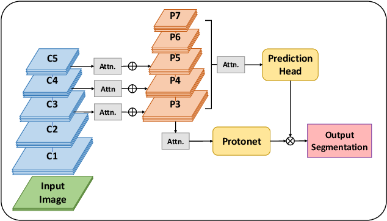
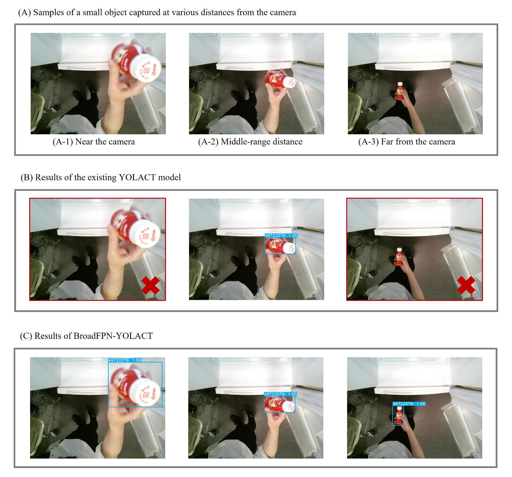
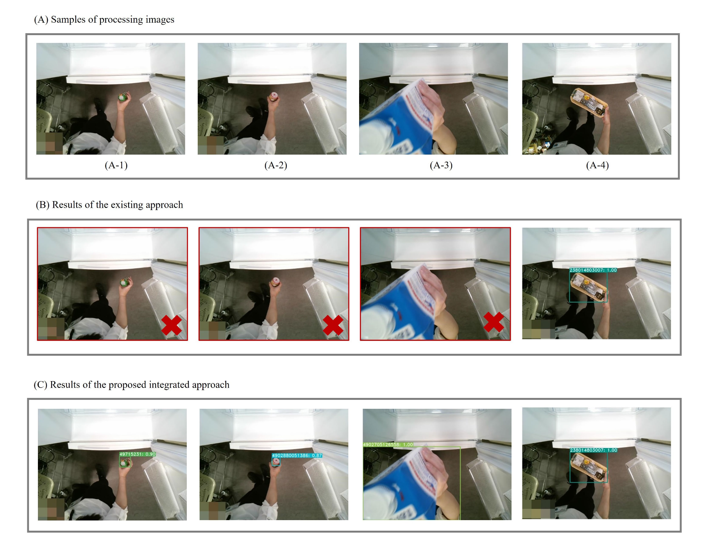

Food Identification in Refrigerators
1. Background: From Barcode/RFID/Sensors to AI-based Visual Food Identification
Managing refrigerator food items is challenging because items that are “out of sight, out of mind” problem, which leads to over-purchasing and waste. Traditional solutions such as barcode scanning, RFID tagging sensors can monitor stock levels but fail when facing unlabeled occluded, distance and small food items in real-world refrigerator scenarios.
- Barcode scanning: Only works for labeled items; unpackaged food or home-cooked food cannot be recognized.
- RFID: Requires manual labeling; costly and labor-intensive.
- Generic vision models (close-range): Often fail with occlusion, backlight/glare, and longer distances.
2. How it Works
How it works (real time): when the door opens, the webcam starts streaming frames to a local GPU PC; a one-stage model (BroadFPN-YOLACT) runs per-frame inference and overlays the label (e.g., “cola”), then logs the item to inventory. See Dai (2024) Fig.1. [1]
- Real-time recognition: Each door event is captured; the camera classifies the item and whether it’s entering or leaving.
- Immediate inventory update: The system logs/updates item ID, quantity, in/out state, timestamp (and optional expiry/owner), keeping the ledger current.
- Actionable prevention: Using these records, it triggers reminders, avoids duplicate purchases, suggests consumption plans, and auto-curates shopping lists—directly reducing food waste.
Next, let’s talk about the technologies used and how the food recognition works.
3. AIModels and Method
1) YOLACT to BroadFPN-YOLACT
Use YOLACT[3] as the base recognition model. YOLACT (You Only Look At Coefficients) is a one-stage deep network for real-time instance segmentation and object detection. During training, it employs a backbone (e.g., ResNet) to extract features, generates prototype masks, and combines them with learned coefficients to produce instance-specific masks. The network optimizes its losses end-to-end and iteratively tunes based on validation performance. Building on this framework, we extend YOLACT with a broader feature pyramid and name the resulting model BroadFPN-YOLACT[1].
Sample images used in this experiment. Panel (A) shows three inputs of a small beverage cup captured at different distances from the camera: (A-1) within 20 cm, (A-2) ≈50 cm, and (A-3) ≈80 cm. Panel (B) presents detection and recognition results of the baseline YOLACT, whereas Panel (C) shows results of the proposed BroadFPN-YOLACT. Blue rectangles indicate detected regions; white text on a blue tag shows the predicted label with confidence. Images with various distortions challenge detection accuracy; missed recognitions are marked with red rectangles. The results indicate that the baseline struggles at very near and far ranges, while BroadFPN-YOLACT successfully recognizes objects at substantially longer distances.

2)Simu-Augmentation [1]
Training deep learning models requires large, well-annotated datasets that closely resemble real deployment conditions. For food recognition in smart refrigerators, inputs are highly diverse: when users place or retrieve items, they may hold them in different ways, causing partial occlusion or changes in the item’s orientation relative to the camera. Portions of the background—such as the refrigerator interior or the user’s body—are often captured alongside the item, and these elements can vary substantially. Conventional augmentation (e.g., scaling, rotation, color jitter, cropping) increases dataset diversity but typically fails to reproduce the full complexity of real scenes. This mismatch between artificially augmented data and in-the-wild imagery can limit performance, as models trained under such conditions may generalize poorly. To bridge this gap, we introduce Simu-Augmentation [1]—a scene-based, realism-oriented augmentation strategy that generates training examples closely aligned with actual usage. The name combines “simulation” and “augmentation,” highlighting our goal of producing object- and scene-level transformations that emulate occlusion, viewpoint changes, and background variability. We use this term throughout the remainder of this work. Consider the experiments below：

The experiments show that the proposed method outperforms existing approaches, accurately recognizing foods of various sizes and remaining robust across different distances and poses. This indicates strong potential for deployment in home environments, where such factors routinely vary.
4. Strengths & Applications
- Low-cost, single-AI camera, real time: Instant recognition enables live inventory updates, alerts, and waste-reduction nudges.
- Robust in the home: Handles small items, longer distances, hand-held angles, partial occlusion, and clutter typical of refrigerators.
- Practical uses: automatic logging, duplicate-purchase warnings, consumption suggestions, and shopping-list assistance.
5. Limitations / Future Work
- Challenging optics: Extreme glare/condensation, low light, strong backlight, motion blur, and heavy occlusion hurt accuracy.
- Open-set risk: Novel or out-of-distribution items can be misclassified with high confidence.
- Privacy & deployment: Cameras may capture people; clear on-device processing and retention policies are needed.
- Future work: Extend to home-made items and integrate expiry-date reading to enable comprehensive nutrition and spoilage management [1].